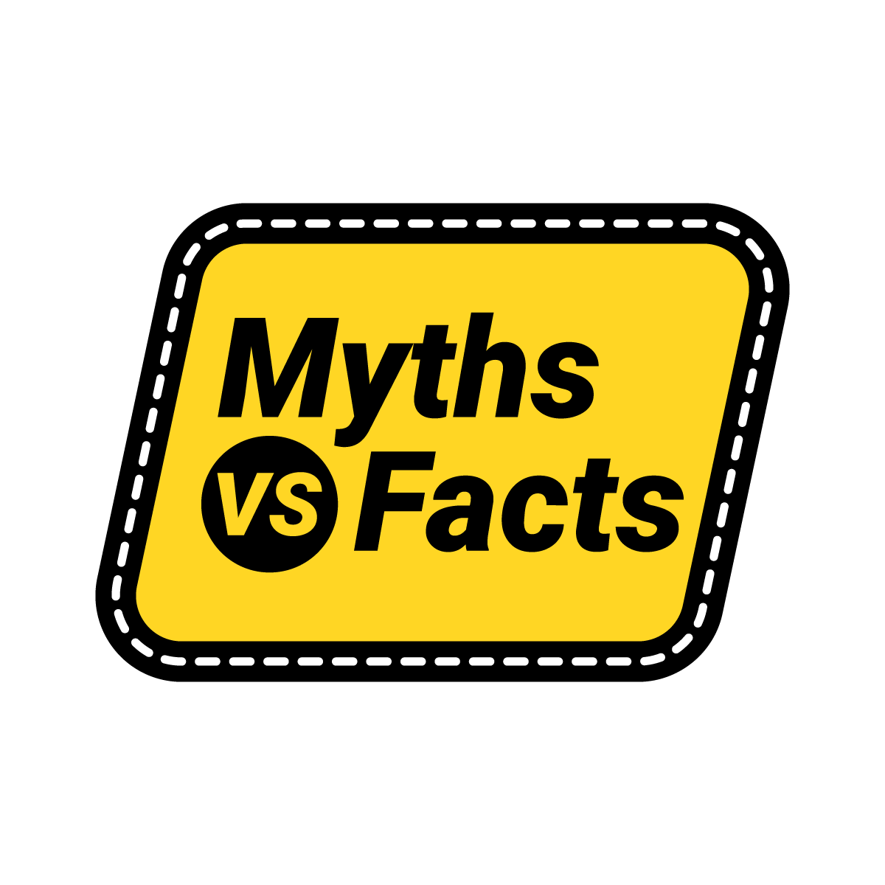
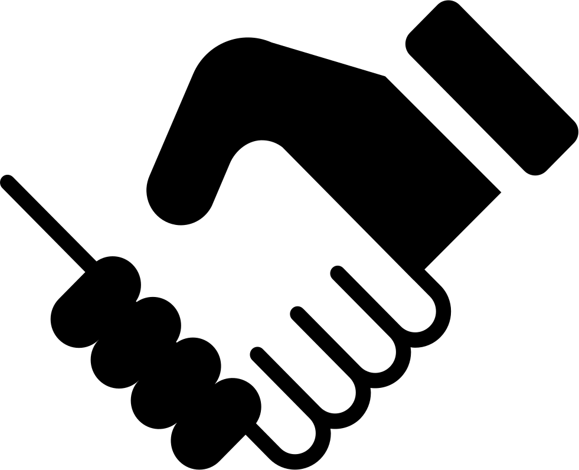

YUVA stands for Youth United for Victory Against Drugs and Delinquency, and that’s exactly what we aim to achieve.
We want to help you stay healthy, happy, and drug-free, and we have a lot of resources and services to offer you.
What we offer:
-  Myths and Facts Related to Drug Addiction
- Participate in Various Competition & Win prizes Worth Lakhs
-
 If your are feeling low Book this Free Therapy session
If your are feeling low Book this Free Therapy session
- Emergency Helpline for Youth 24x7
-
 Report a Drug Abuse Case
Report a Drug Abuse Case
-  Collaborate with us and Help increase Awareness
-
 Conduct an Awareness session in your locality
Conduct an Awareness session in your locality
“I was addicted to heroin for 10 years, and I had lost everything: my family, my friends, my job, my health. I had tried to quit many times, but I always relapsed. I felt hopeless and worthless. Then I found YUVA, and it changed my life. They helped me get into a detox and a rehab program, and they gave me free therapy and support. They also connected me with other people who were in recovery, and they encouraged me to join their activities and campaigns. They made me feel like I was part of something bigger than myself, and that I had a purpose and a future. Thanks to YUVA, I have been sober for 2 years, and I am happy and grateful for every day.”
“I started using drugs when I was 14, because I wanted to fit in with the cool kids. I didn’t know the risks and the consequences of drug use, and I didn’t care. I thought it was fun and harmless. But soon, I realized that drugs were ruining my life. I was failing in school, I was getting into trouble with the law, and I was losing my friends and family. I wanted to stop, but I didn’t know how. Then I found YUVA, and it opened my eyes. They taught me about the harmful effects of drugs and how to protect myself and my friends from them. They also gave me a QnA test and a chatbot that helped me with my mental health issues. They also inspired me with their stories and messages, and they helped me make smart choices and overcome challenges in life. Thanks to YUVA, I have been drug-free for 6 months, and I am proud and confident of myself.”
“I was a victim of drug trafficking, and I was forced to use and sell drugs by a gang. I was scared and trapped, and I didn’t know how to escape. I felt like I had no hope and no help. Then I found YUVA, and it saved my life. They helped me call their emergency helpline, and they sent the police and the NCB to rescue me. They also gave me free and private help for my addiction and trauma, and they helped me find a safe and supportive place to live. They also involved me in their positive and constructive actions, and they rewarded me for reporting crimes and making a difference in my community. They also connected me with mini-influencers, celebrities, and experts who promoted drug-free lifestyle, and they made me feel like I was not alone, and that there was hope and help available. Thanks to YUVA, I have been free from drugs and crime for 1 year, and I am happy and hopeful for my life.”
.png)